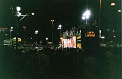
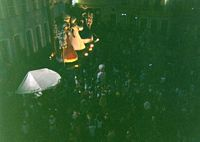
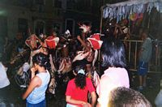
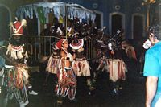
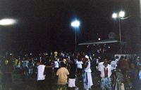
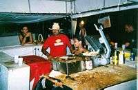
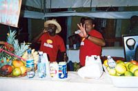
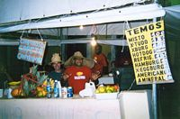

DOCTYPE html>
DOCTYPE html>

DOCTYPE html>
DOCTYPE html>
DOCTYPE html>
DOCTYPE html>
DOCTYPE html>
DOCTYPE html>
DOCTYPE html>
25 f�vrier
DOCTYPE html> Le bus arrive enfin a Salvador, apr�s 30 heures de route. Je ne sens plus mes fesses. Je file prendre un bus pour le quartier Pelourinho, direction l'auberge des deux DOCTYPE html> Fran�aises de Rio. J'attends la un petit moment, puis je vois arriver des Peruviens que j'avais vus dans le bus Rio-Salvador. On sympathise (evidemment) puis je DOCTYPE html> decouvre qu'ils vont dans la meme auberge que moi. Le bus arrive, et je monte � la suite d'un membre de la petite troupe, il est Fran�ais (le guide du routard sous le DOCTYPE html> bras, �a ne trompe personne). Donc, trois Peruviens (Pedro, Pancha et Rodrigo) et un Fran�ais (Florent). Le bus nous DOCTYPE html> depose � l'entr�e de Pelourinho (Praca de Se). Nous nous orientons comme nous pouvons, direction l'AJ. C'est d�j� la f�t� ici. Avec nos enormes sacs a dos, nous DOCTYPE html> sommes le centre d'attention pour tous les locaux qui possedent une chambre, ou connaissent l'ami d'un cousin qui pourrait louer un grenier pendant la dur�e du DOCTYPE html> carnaval. A ce moment-la le prix des locations monte en fleche (x2 ou x3). Nous allons voir une Pousada, 12 R$ la premiere nuit (hors-carnaval), ensuite 45 R$. un DOCTYPE html> petit vieux qui vend des porte-bonheurs nous amene dans un autre endroit, une petite place charmante o� se trouve le Museu da Cidade. C'est au deuxieme etage, la DOCTYPE html> chambre donne sur la rue, mais elle est occup�e par des Italiens, qui doivent partir en avion dans la nuit. Nous negocions (enfin, surtout les Peruviens) pour 12 R$ la DOCTYPE html> premiere nuit. On verra ensuite. Nous sommes loges provisoirement dans une piece a c�t�, ou nous pouvons enfin poser nos sacs. Le carnaval est beaucoup plus facile DOCTYPE html> a vivre sans 15 kilos sur le dos. Pelourinho est le centre historique de la ville, il n'y a que des vieilles baraques de l'epoque coloniale. L'ambiance est tr�s chaude, c'est la DOCTYPE html> f�t� tous les mardis soirs ici, pendant toute l'ann�e. Des groupes de musiciens (bateria) font le tour des rues, en passant sous nos fenetres d'ailleurs. Ils entrainent DOCTYPE html> avec eux des danseurs locaux et touristes, tout cela communique en rythme dans la joie et la bonne humeur. Tout Sud-Americains qu'ils sont, les Peruviens aussi sont DOCTYPE html> estomaques. En tous cas, nous nous couchons tard. Les Italiens aussi, nous ne recuperons la chambre que sur le coup de 8 heures du matin, heure a laquelle le DOCTYPE html> proprietaire entreprend de demonter les lits superposes de la premiere piece pour les remonter dans notre nouvelle chambre. Tout �a sous notre regard bienveillant et DOCTYPE html> plein de vie apr�s une premiere nuit de f�t�. DOCTYPE html>26 f�vrier
DOCTYPE html> Je vais � la plage avec Pedro et deux amies qu'il a rencontr�es. �a, c'est Pedro. C'est toujours utile d'avoir un Pedro avec soi. La plage sur le port est bond�e, mais DOCTYPE html> nous avons la flemme d'aller jusqu'a Barra. Je m'eclipse juste avant que ma peau ne commence a craqueler. Le soir, je retrouve Pedro � l'appartement, il y a trois DOCTYPE html> nouvelles personnes � bord : un couple de Chiliens, tr�s sympas, et une Suedoise, tr�s mignonne. Merci Pedro. Rodrigo, qui parle portugais, est alle negocier : 1000 R$ DOCTYPE html> pour 7 jours, bref une affaire. �a nous revient en tout a 20 R$ et quelques par personne. Depuis on l'appelle "El Negociator". Et me voila installe en plein Pelourinho, DOCTYPE html> sur la plus jolie place du quartier, et au deuxieme etage donc avec une vue imprenable. pendant le Carnaval de Bahia. �a devrait bien se passer. Nous sommes 7 pour DOCTYPE html> l'instant, mais notre petite troupe va bientot s'enrichir de nouveaux elements, a cause de l'effet Pedro. Apr�s tout plus on est de fous, et moins c'est cher.DOCTYPE html> Le soir se passe plus tranquillement, le carnaval commence demain, et les Bahianos n'ont plus l'excuse du mardi pour faire la f�t�. Donc c'est juste un petit peu moins DOCTYPE html> anime, histoire de marquer le coup quand meme, un jour sans f�t� c'est assez rare en cette saison. En fin de soir�e, nous suivons un petit groupe sous un porche qui DOCTYPE html> debouche en 30 secondes sur l'envers du decor, c'est-a-dire des baraquements en plein centre ville, avec du reggae et des billards. Je suis un peu sur le qui-vive car �a DOCTYPE html> me rappelle des mauvais souvenirs, mais cette fois nous sommes 5 et finalement tout se passe tr�s bien.DOCTYPE html>
27 f�vrier
DOCTYPE html> Premier jour du Carnaval. Je profite de ma journ�e pour me promener et laver mon linge. Bienvenue a Javier, le fr�re de Rodrigo, egalement Peruvien. Neuf � la maison. DOCTYPE html> Nous n'avons que 7 matelas, qu'a cela ne tienne, nous allons tous les aligner par terre (finis les lits superposes). Je souris en pensant � la tournure que prend ce DOCTYPE html> carnaval. Et ce n'est que le premier jour. Je retrouve les autres � l'appartement en debut de soir�e, il y � le couple de Chiliens, Pedro et Javier. Nous partons vers 20h, DOCTYPE html> sans nouvelles des autres. Le quartier Pelourinho habituellement tr�s anime est etrangement calme. La Chilienne rencontre trois amis Americains en route, puis nous DOCTYPE html> partons tous ensemble en taxi pour le Barra, lieu du premier defile du carnaval. Je monte avec les Amer., evidemment on n'arrive pas a faire la jonction avec l'autre taxi DOCTYPE html> au Barra, et voila que j'ai change de groupe. Nous suivons le flot humain jusqu'a la plage, la route qui la longe est occup�e par les "camarote" (petites baraques DOCTYPE html> surelev�es mont�es tout le long du defile), les baraques a frites et la foule surexcit�e, qui chante et qui danse autour des "blocos". Les blocos, ou "electricos", sont des DOCTYPE html> semi-remorques charges d'enceintes jusqu'a la gueule, avec une scene et un groupe sur le toit. Tout autour du camion, il y a des danseurs aux couleurs du bloco, souvent DOCTYPE html> un simple T-shirt, il y a beaucoup de touristes. Ils sont entoures-proteges par une corde de plusieurs centaines de metres, tenue par des membres de l'�cole. Nous nous DOCTYPE html> deplacons tranquillement � la suite d'un electrico, et nous rencontrons Pedro et les autres, qui decident de repartir en sens inverse vers le debut du defile. Je quitte DOCTYPE html> donc les Amer. qui preferent rester la, tranquille.DOCTYPE html> Plus nous remontons et plus la foule se fait dense. Nous nous deplacons � la lisiere des blocos, le long de la corde. L'ambiance est delirante, en permanence � la limite DOCTYPE html> du debordement. A un certain moment, nous manquons de nous faire pietiner car la musique s'est faite plus forte, plus entrainante et tout un groupe s'est mis a bondir DOCTYPE html> dans tous les sens. Comme �a, a froid, c'est assez impressiooant. Vite � l'abri sur le trottoir, loin du bloco, car des Bresiliens profitent de la folie pour distribuer des DOCTYPE html> coups de poing au petit bonheur la chance, dans une ambiance qu'on pourrait qualifier de "virile". 30 secondes plus tard, le calme est revenu. et la police anti-emeutes DOCTYPE html> peut reprendre ses DOCTYPE html> rondes, en file indienne par 6, matraque � la ceinture. �a n'a pas l'air d'�tre du caoutchouc. Mais je suis content de les voir. Notre petite bande s'etire a mesure que DOCTYPE html> nous progressons et je finis par perdre les autres. Je le prends avec philosophie, je me dis que c'�tait inevitable, et je m'interesse serieusement au bloco "Arrestacao" DOCTYPE html> qui commence juste son tour (nous avons marche quasiment jusqu'au debut du defile). Et la j'ai compris pourquoi il y a eu une quasi-emeute tout-a-l'heure. Quand tu suis DOCTYPE html> le bloco depuis le debut de la chanson, tu la sens monter dans la foule, c'est presque palpable. J'ai du tomber sur un bloco populaire parce que la foule se fait vraiment DOCTYPE html> pressante, meme sur trottoir. J'essaie quand meme de bouger pour trouver les autres. J'ai l'impression de progresser dans un element liquide qui s'ouvre avec peine DOCTYPE html> devant moi et se referme immediatement apr�s. Tout le monde bouge en rythme, je decide de progresser au rythme du bloco. Je ne connais rien � la samba, mais je sais DOCTYPE html> que d'ici 2 minutes, �a va partir tr�s fort. Bingo. Cette fois, je fais partie des excites, plus peur du tout, au contraire on a moins de chance de tomber quand on DOCTYPE html> saute en l'air en rythme ;-) Cette phase va durer tr�s longtemps, bien que je n'aie pas vu le temps passer. De toutes facons je n'ai plus de montre, et les Bresiliens n'ont DOCTYPE html> pas l'air d'en avoir besoin non plus. Quelques chansons plus tard, la musique se calme et je peux repenser. Aux autres. Ou sont-ils ? Je decide de marcher en sens DOCTYPE html> inverse au milieu de la rue, entre le bloco "Arrestacao" et le suivant. Trois blocos plus loin, la rue est quasi-vide (tout est relatif quand meme) et j'apercois mon groupe DOCTYPE html> d'amis au milieu de la route, tranquilles. Ils ont fait la jonction avec Florent, Rodrigo et Pancha. Le temps des retrouvailles pass�es, nous prenons un taxi pour DOCTYPE html> Pelourinho. Il nous depose en bas de la ville, nous devons prendre l'ascenseur pour la Praca de Se Comme d'habitude, nous prenons deux taxis et comme d'habitude DOCTYPE html> nous perdons l'autre groupe. Cette fois je suis avec Florent, Rodrigo et Javier. Nous restons un peu sur la place devant la Pousada, Florent degoute un Bresilien par son DOCTYPE html> habil�t� au foot-ball. Et aussi par son sang-froid : jouer pieds nus sur des paves avec une coco verde (c'est deux fois plus gros qu'une noix de coco), je ne l'aurais pas fait. Meme si j'avais �t� un fan de foot.DOCTYPE html>
28 f�vrier-5 mars
DOCTYPE html> Carnaval. Indescriptible. Les Peruviens sont des fous furieux, voici une soir�e type :DOCTYPE html> 1. caipirinha tous les soirs, une recette maison : plusieurs bouteilles de la cachaca de la pire espece (celle qui coute deux fois moins cher que la biere),DOCTYPE html> un enorme sac de glace et un enorme sac de citrons verts, plus 2 kg de sucre, pour faire passer le gout. Les bouteilles d'eau (celles que nous achetons dans la journ�e pour eviter la deshydratation due aux exces de la veille et au soleil qui tape dur) sont decoup�es en deux, la cachaca vers�e et les citrons ecrases � l'aide d'un bout de bois qui Pedro acheta � l'origine avec un tambour. Triste fin pour un instrument de musique.
DOCTYPE html> 2. sortie juste devant l'appartement, bain de foule et danse
DOCTYPE html> 3. rep�t�r l'operation 1 et 2 jusqu'a plus soif ou coma ethylique
DOCTYPE html> 4. dodo
DOCTYPE html> 5. reveil, trempes de sueur par la chaleur du soleil d�j� haut (je rep�t� que nous sommes 7, voire plus, dans l'appartement)
DOCTYPE html> 6. competition pour l'acces � la douche
DOCTYPE html> 7. petit dejeuner, ballades et achat des bouteilles d'eau en ordre disperse
DOCTYPE html> 8. retour casa, reformation du groupe, puis revenir en 1
DOCTYPE html> Inutile de dire que je n'ai pas pu suivre le rythme plus de deux jours. Florent est comme moi et prend un peu de distance, il a rencontre un autre Fran�ais, Taieb, qui est un habitue des voyages. Il habite depuis plus d'un moi chez l'habitant dans le quartier de Campo Grande, un autre quartier de Salvador, qui touche Pelourinho. Campo Grande est aussi un circuit du carnaval.
Pour resumer, il y a trois circuits : Pelourinho (folie douce), la Barra (folie furieuse tendance touristique) et Campo Grande (folie furieuse tendance locale).
{kind=link}
DOCTYPE html> Je vais passer mes soir�es soit avec les Fran�ais, soit avec les Peruviens. Bref, notre petit groupe se fractionne (et se recompose) de maniere informelle et mouvante. Je ne sais pas si je me fais bien comprendre. Enfin.
DOCTYPE html> Pedro, Javier, Rodrigo, Florent et moi decidont d'ach�t�r le costume de Olodum, un des blocos les plus populaires de Bahia. C'est le ticket d'entr�e pour danser et faire la f�t� "dans les cordes", c'est-a-dire avec de la place pour bouger.
DOCTYPE html> Evidemment, l'operation n'est pas facile car nous nous y prenons au dernier moment, c'est-a-dire le soir du 1er defile d'Olodum, a Campo Grande.
DOCTYPE html> Il faut savoir que chaque bloco defile trois fois, une fois sur chaque circuit. Nous devons nous fier � un des musiciens d'Olodum pour la fourniture des dits uniformes, qui consistent en un t-shirt et un short. Il nous donne rendez-vous dans Pelourhino et arrive triomphalement avec une heure de retard, pour enfin nous donner les costumes : il n'en n'a que quatre, dont deux trop grands (XXXL) et un pour filles (jupe au lieu du short). J'arrive a enfiler le dernier (taille M), car de la bande je suis de loin le moins baraque. �a a au moins cet avantage.
DOCTYPE html> Le gars-musicien revient encore 20 minutes apr�s avec cette fois des tailles M et S. Pedro emporte un autre M. Florent essaie un M, tout le monde lui dit que �a lui va super, mais on ne peut pas refrener un gros eclat de rire collectif devant son corset. Comme le musicien ne peut rien avoir d'autre, les deux Peruviens et Florent se decident pour les XXXL, a defaut d'autre chose : mieux vaut une robe qu'un corset, �a sera plus confortable pour danser.
DOCTYPE html> Apr�s le troisieme aller-retour du musicien, nous sommes tous plus ou moins equipes, et nous filons � l'appartement pour les dernieres retouches.
DOCTYPE html>
Si vous n'avez jamais vu des malabars se mettre � la couture, je vais vous peindre le tableau :
DOCTYPE html>
Dans l'atelier decoupage des manches, nous avons Javier qui tient delicatement un t-shirt, la manche d'un c�t� et le corps de l'autre pendant que Pedro taille dedans a grands coups de ciseaux.
DOCTYPE html> Dans l'atelier raccourcissement, Florent fait des ourlets a son t-shirt sous l'oeil impitoyable de Rodrigo, en attendant que les ciseaux se liberent.
DOCTYPE html> En un quart d'heure, nous avons tous notre t-shirt personnalise, sans manches et avec une taille raisonnable. Avec le tissu que nous avons laisse, il y a de quoi fabriquer deux autres t-shirts. Nous decidons de partir avec nos propres shorts, laissant les jolis shorts estampilles olodum, de couleur orange avec un arc-en-ciel...
DOCTYPE html> Nous prions pour que les "gardiens des cordes" d'Olodum nous laissent entrer dans le bloco, apr�s ce que nous avons fait subir a leur uniforme.
DOCTYPE html> La soir�e se passe bien, mais sans exces, bien � l'abri des cordes, j'ai perdu les autres au bout de 10 minutes, evidemment, je les retrouverai en fin de soir�e, evidemment.
DOCTYPE html> Toutes les soir�es suivantes sont du meme tonneau (arh )
DOCTYPE html> Le temps se gate les deux (ou trois ?) derniers jours, nous avons droit a quelques averses. Si cela impressionne les musiciens et danseurs pendant la journ�e, �a n'interromp en aucune maniere la musique le soir venu.
DOCTYPE html> J'accorderai une mention speciale au 5 mars, derniere soir�e a Pelourinho, que les Peruviens et moi avons pass�e a suivre des blocos composes uniquement de percus. Tout le monde est en transe, malgre les averses intermittentes.
{kind=link}
DOCTYPE html>
6 mars
DOCTYPE html> Jour du d�part. Le carnaval est termine, toutes les infrastructures sont demont�es ou en voie de l'�tre, les Chiliens sont partis, Florent aussi.DOCTYPE html> Le temps a vire au gris. On dirait que meme le ciel � la gueule de bois.
DOCTYPE html> Je fais mes adieux � la bande, mon onibus pour Recife est a 19h.
DOCTYPE html> Je n'ai pas grand'chose a dire sur le voyage, sauf que j'ai encore la t�t� et les tripes a Salvador, et il se passera plusieurs jours avant que je me remette.
DOCTYPE html>
DOCTYPE html>
DOCTYPE html>